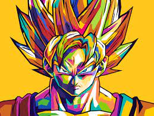
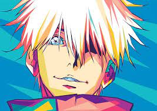
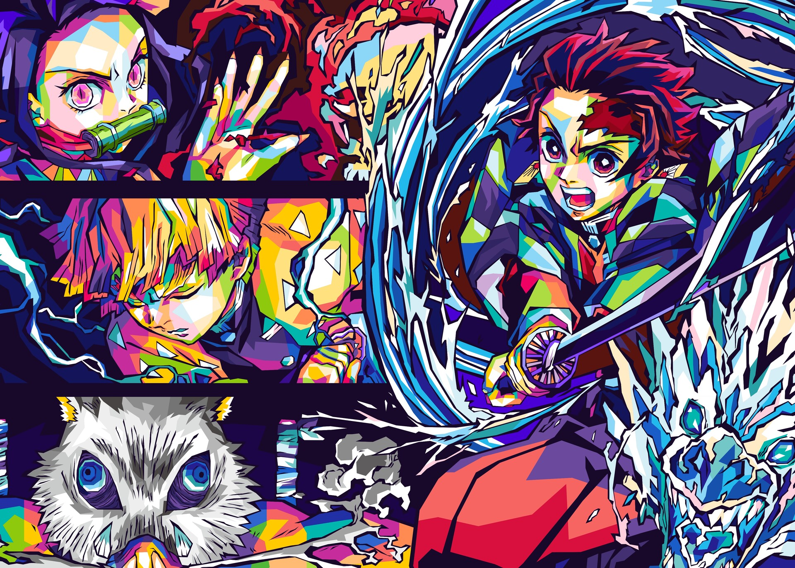
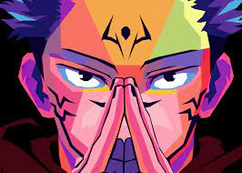
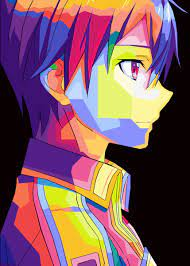
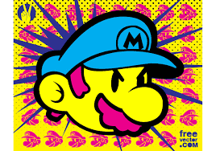
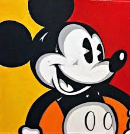
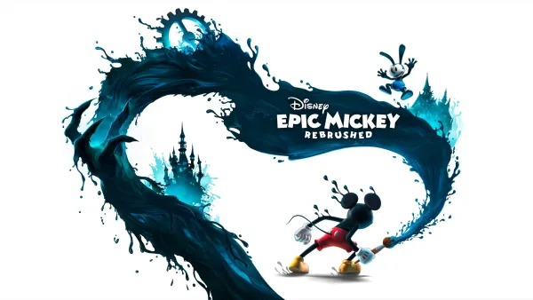
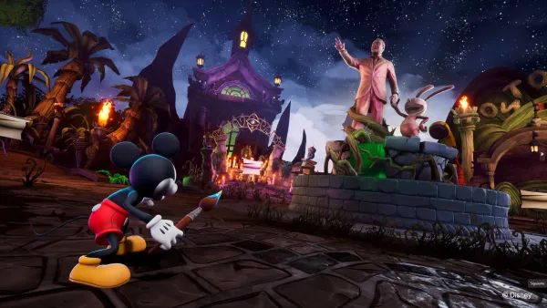

Recomendados
    
Disney Epic Mickey: Rebrushed, el regreso de un clásico de Wii
Una de las consolas que con más cariño se recuerda es la Wii, debido a su característica más distintiva, el Wii Remote, el cual permitía apuntar a la pantalla y lograba detectar movimientos en forma tridimensional; esto abrió un mundo de posibilidades en la inmersión dentro de los videojuegos. Por esa misma razón es que Epic Mickey se convirtió en uno de los títulos favoritos de los dueños de dicha consola, ya que resultaba genial usar los controles como un pincel mágico para crear objetos o borrarlos.
Pues, para aquellos fanáticos de antaño, o los nuevos, se ha anunciado, en el Nintendo Direct, el lanzamiento de un remake para el primer semestre de este año, por parte de Purple Lamp en colaboración con Disney Games como desarrolladores y THQ Nordic como publishers. Esto lleva a que podamos regresar a Wasteland, el mágico mundo creado por Yen Sid (El Aprendiz de Brujo), y salvarlo del gran problema ocasionado por las travesuras de Mickey.
Es sabido que se han mejorado las mecánicas, agregando nuevas habilidades y reconstruyendo el apartado visual y la interfaz, sumado a que nuestro estilo de juego le dará forma a la historia, cambiando incluso el desenlace de la misma, haciendo posible que tengas que rejugarlo varias veces. Por lo que adentrarte a esta clásica aventura de Mickey y Oswald está solo a un brochazo de distancia.
Antes de que te vayas, respóndeme, ¿has jugado Epic Mickey? ¿Recuerdas a Oswald, el conejo de la suerte? ¿Pintar a tus enemigos o disolverlos?